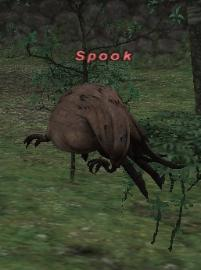
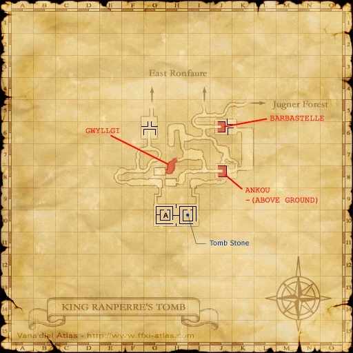

Level 75 reference · Zenith rules
|
Job: |
 Image source |


|
Zone |
Level |
Drops |
Steal |
Spawns |
Notes |
|
King Ranperre's Tomb (I-10) |
11-13 |
1 |
A, H, HP | ||
|
HP = Detects Low HP; M = Detects Magic; Sc = Follows by Scent; T(S) = True-sight; T(H) = True-hearing JA = Detects job abilities; WS = Detects weaponskills; Z(D) = Asleep in Daytime; Z(N) = Asleep at Nighttime | |||||


Image source
Notes:
- Spook spawns randomly around the Tombstone at (I-10) in King Ranperre's Tomb. Spook will first spawn shortly after 20:00. 17 Min real time for re-spawn so you can max kill 2 a in-game night
- Contrary to popular belief, Spook is not a notorious monster. Due to his limited pop range, time-based spawn and fairly good drop item, he is still often referred to as an NM.
- HP 275~
Adapted from Eden Wiki: Spook · Contributors and history · CC BY-SA 4.0. Revision 12939. Layout, links and optional background text adapted for Zenith.